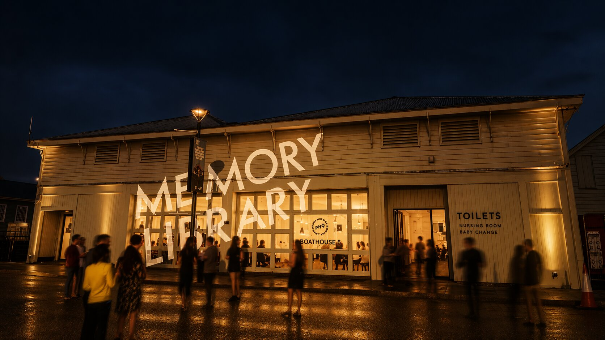
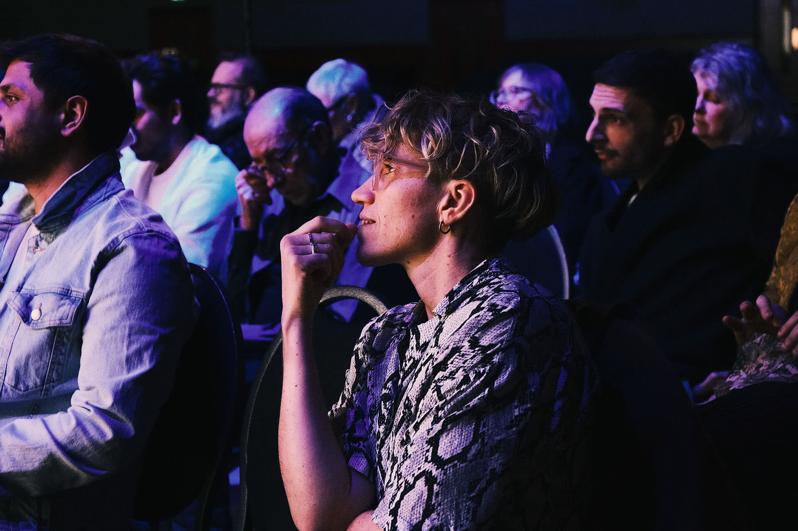

An evolving programme of exhibitions, artworks, talks, workshops, screenings, performances, artist development and international exchange exploring memory, place, heritage, technology and connection.
Boathouse 5, Portsmouth Historic Dockyard
November 2026
Play Office
A new public space for memory
Memory Library brings heritage, creative technology, artist development and international exchange into one visible, accessible programme, asking how a city can use digital culture to remember, care and connect.

See the full programme
Exhibitions, talks, workshops, screenings and performances - some on throughout Memory Library, others on set dates across the festival.
View the programme →Past Makes Future
An international artist conference and gathering, plus Pageant, a separate evening event on the same day.
See the full running order →
Artists & exchange
Memory Library brings together artists and collaborators from Portsmouth, Bangladesh, Cairo, Lebanon, Malta and Jersey through Resonate, Play Office's artist development programme.
Have a memory connected to Portsmouth?
Memory Library is built from the everyday stories of the people who make up this city. Come and share yours, or get in touch ahead of time.